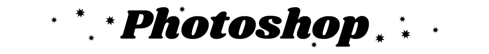
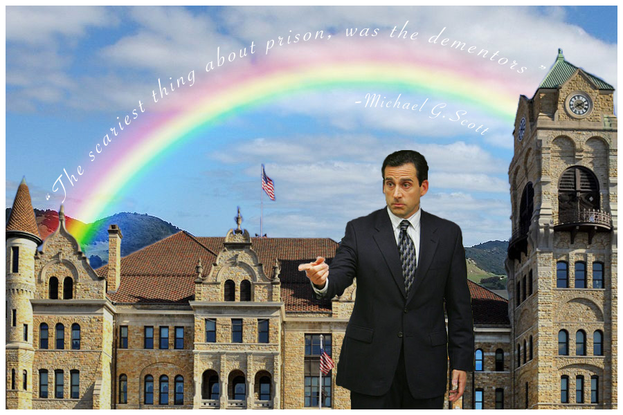

Home |
Raster |
Vector |
Time Based Media |
About |
Contact

I learned the basics of editing photos using Adobe Photoshop!
In this unit I had the freedom to play around with the more infantile aspects of my own humor. Using the essential tools of photoshop, I created a raster file that depicts my favorite superhero... Michael G. Scott. In this final project he is placecd in an environment made up of bits and pieces of other environments, accompanied by a little inspirational quote that I try to live by.